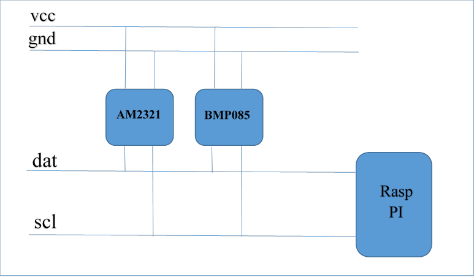

This part of the documentation describes the sensors interface. With sensors we mean devices that are physically connected/attached to the Raspberry to one of the GPIO pins. So they are connected with a physical wire. Sensors typically are temperature/humidity interfaces or energy sensors.
What makes sensors different from the "normal" receivers: The latter operate asynchronously and begin to send as they like it. The connected wire sensors will only start once they receive a command over the line from the MCU (Micro Controlling Unit aka Raspberry).
For the sake of simplicity, I like to categorize wired sensors in the following groups:
The first catagory to describe is the group of sensors that do not use a bus system to connect to the Raspberry PI (so have multiple sensors in series connected to the same wire). Instead every sensor will need to be connected separately to VCC and GND as well as be assigned its own exclusive GPIO pin.
This may or may not be sufficient for your use, but there is an advantage to this approach: These sensors in general are cheap and contain good value. There is however a drawback when using these devices (as will be explained in further details below): If we connect these sensors to a busy system the timing of the system might not be good enough to support the critical timing (in 20uSec) that these devices need.
The DHT11 temperature/humidity sensor is a typical example of such a sensor device. It has 3 outside connector pins: GND, VCC and Data. Of course the latter will be the most important pin to work with. In case of the DHT11 we need to send a start pulse to the data pin, wait a predefined number of micro seconds and then we will receive the 40-bit (5 bytes) sensor reading from the device as 2 bytes humidity reading, 2 bytes temperature reading. And 1 byte for parity check.
Connecting the DHT11 is easy, it is low cost and easy to connect. However, you are advised to buy the slightly more expensive DHT22 model instead. The DHT11 does not output decimal parts of the temperature and humidity (decimal part of the output bytes are always 0). The DHT22 is fully compatible with the DHT11 but will provide temperature readings with 0.1 degree Celsius precision.
The DHT11 is not compatible with the Dallas 1-wire bus protocol (see below) which makes it a less flexible choice, even with its low pricetag.
After using the DHT11 for a few days I decided to buy a DHT22 sensor. The reason was that I cannot use a sensor with a 1 degree temperature resolutions. Both are pin compatible, yet the DHT22 is more accurate. My DHT22 came with 4 pins instead of 3. The difference here is that since only 3 pins are really used that some DHT11 and DHT22 devices come with a supporting 2.54mm pin interface and are already soldered on a supporting board. If you receive a 4-pin version keep in mind that pin 3 is nc (not connected).


Writing a software program to read the temperature and humidity values from a sensor is a relatively simple task. In case of the DHT11 one needs to send a pulse sequence over the data pin which tells the sensor to send its data, wait a predefined number of microseconds and the sensor will take over the data line and starts sending its 40 bits of data.
In principle, all you have to do is read the status of the data line in uSec time intervals and as soon as the data line switches from high to low, or vice versa, note the pulse time. Every bit transmitted starts with 50uSecs High value followed by a pulse of 25 uSec means a 0 value or a pulse of around 70 uSecs which means a logical 1.
There are a few methods for reading one-wire sensors:
The first method described above is a brute-force method: we read the value/level of the data pin every uSec in loop and as soon as the sensor changes state/value we record the time interval since the last state change. This might consume an undesired amount of CPU resources. But there is a more important reason why the simple read might not work: If you use other sensors or wireless devices that use interrupt handlers to read incoming messages, your reads will not be timed correctly as these interrupts are handled with a higher priority than other running processes.
As an alternative, it is possible to use an interrupt handler to measure and time signal transitions on the data pin. The time difference between 2 transitions will be an indicator of “0” or “1” values. My experience with the last method is mixed: The method works much better when there is a lot of other data to read. But the timing of the data line is still critical and the sensor pulses are really short, even for the RaspberryPI. Especially when other interrupts arrive (433 MHz data for example) it is possible that a transition is not noticed and timing of two pulses is combined (and there is one pulse time less in the buffer).
Of course it is possible to NOT connect any 433MHz receivers to the Raspberry, in which case a single sensor can be read quite reliably. However, in our Home Automation application 433MHz receivers are key. And sad-but-true, there is a HUGE amount of 433 MHz noise in and around the home which causes lots of meaningless interrupts to the application. There are good and better (more selective) receivers, and some have developed a low-pass filter for 433MHz receivers. However, when weather station start with theirs 60-second data bursts the amount of interrupts on the receiver pin is enormous (leading to 20-30% cpu usage).
The third method is easy on the programmer. There are two functions available in the wiringPI dev library that support the Max functions: readRHT03() and maxDetectRead(). In some situations I found these functions to lock-up the Raspberry system (looking into this), whereas in other situations they work very reliable.
I did some tests with my DHT11 sensor to measure the performance of the three methods. I tested method 2 and 3 in two ways: (a) Without any other (major) load on the RPI, and (b) with the LamPI-receiver process running, so that all other 433MHz receiver interrupts needed to be dealt with as well.
For every method tested I made sure that we raised the interrupt priority prior to reading a value, and dropped it to 0 again after an successful read. This is done as reading a sensor is a synchronous operation (as seen by the initiating LamPI daemon) and we wait it to be successful and as short as possible (time). Compared to 433MHz interrupts that are generated by the receiver as a result of a remote sending a value. These asynchronous and autonome transmissions are handled by the daemon and if we miss one of those we'll pick up the next transmission.


As you can see in the results above, an average successful read in a system without load takes about 3 seconds (including a 500 ms start delay between read attempts and some other short wait times)

The figure above tells us that for reading 10 successful values we have a total elapsed time of 1 minute and 17 seconds, which means that a successful read takes 7.7 second on average. Still this figure is a little misleading: Not every read attempt is successful, and in the program we wait 500 milliseconds between attempts. This is because the datasheet mentions a mandatory time delay of about 1 second between read attempts. It is possible to leave out his wait, this will cause no major problems, other than that reads become less accurate (probably because the sensor cannot auto adjust between read attempts).

As you can see, the built-in function in the wiringPi library is highly efficient in an unloaded sitution.

And the built-in function is very much inefficient if the system is handling regular 433MHz receiver interrupts. Also errors are introduced (even with checksum) that make its results unreliable. In practice this means that the wiringPi library function has to redo an enormous amount of read attempts that did not pass the checksum test.
For reasons described above, a non-bus interface may not always be the best solution for connecting sensors. Timing issues are already an issue when having one sensor connected to one GPIO pin, let alone when we would like to have multiple sensors connected to our Raspberry.
Therefore, I will further experiment with other 1-wire (Dallas) and 2-wire sensor (I2C) bus interconnects. Read more below.
The third method described uses a 1-wire module interface to retrieve the values from a slave device. This interface is called MicroLAN and has been defined by Dallas Semiconductors. Users can access sensor values by reading the value of the slave device in the /sys/bus/w1/device directory. Standard modules w1-gpio and w1-therm then will control the low-level details of the communication. And we can open a device in the /sys/bus/w1/device directory and read the values from there. The DS18B20 temperature sensor is an example of a 1-wire capable sensor device compatible with the Dallas/MicroLAN specification.
The MicroLAN bus is slower than the 2-wire I2C bus, but as a result it can be (much) longer. Sources on internet specify a length of 100 meters or more (over CAT 5e Ethernet cable).
After playing around with the Dallas bus for the Raspberry I found it to be the easiest bus to work with. It is fast enough for my purpose and setup is a breeze. The main disadvantage is that there are almost NO Dallas bus compatible sensors available, which is just too bad.
 I bought 5 DS18B20 temperature sensors on eBay for LamPI environment with the plan to
make a small MicroLAN network with these sensors. Connecting 3 pieces 18B20 sensors in parallel works easy. And as wiring can be longer than with the I2C bus, you can connect almost as many Dallas sensors to my Raspberry as you want. Of course, a wireless sensor is even more convenient, but as the amount of wireless communication in my house grows, I'm afraid that at some moment a device will block certain frequency bands (some 433 transmitters do already) if they are not properly connected or are in error.
I bought 5 DS18B20 temperature sensors on eBay for LamPI environment with the plan to
make a small MicroLAN network with these sensors. Connecting 3 pieces 18B20 sensors in parallel works easy. And as wiring can be longer than with the I2C bus, you can connect almost as many Dallas sensors to my Raspberry as you want. Of course, a wireless sensor is even more convenient, but as the amount of wireless communication in my house grows, I'm afraid that at some moment a device will block certain frequency bands (some 433 transmitters do already) if they are not properly connected or are in error.
The TO-92 version that I ordered looks just like a transistor which makes them relatively easy to work with. In the picture you see the cheap standard version of the 18B20. High temperature and water resistant versions are available as well. In order to test the Dallas bus I ordered 5 of the cheap standard sensors and 2 water resistant sensors.
The water resistant sensors have a lead wire of approximately 1 meter which is for our purpose long enough to have a Raspberry near the area where I like to measure the temperature of. Apart from using this sensor outside the house, another area of application would be to measure temperatuer of central heating pipes etc.

Load both modules with the modprobe command:

These commands must be loaded after every reboot of the Raspberry. If you want to load modules automatically then add two lines with the words w1-gpio and w1-therm to the /etc/modules file.
After the modules are loaded it is easy to read the value of the sensors. Go to the /sys/bus/w1/devices directory and list the directories and files. Apart from the w1_bus_master command there will be one or more other directories, one for every device on the bus.
For the ds18b20 sensor, the directory name will start with 28-xxxxxx . Go to one of the ds18b20 directorys and use the following command to read the current termperature at the sensor:

Both modules w1-therm and w1-gpio need to be loaded prior to their usage. By default, GPIO pin 4 (P1 connector 7) is used.
The small C software program can be found in the sensors/ds18b20 directory. The software program is very simple in design, as all low-level synchronization and interrupt handling is done completely in the module. As a result, the bus softwar eis very (I mean VERY) reliable compared to the DS11, especially when the system is serving a lot of other interrupts, socket messages and user interaction.
My situations is the same as in the picture below (found it on the web somewhere). I have three sensors connnected to my RPI and read them with a small program..

Maybe a restart is required to have your RPI recognized the modules, but after that the device "files" w1_slave in the /sys/but/w1/device/28*/ directories can be read and will contain the lines we're loooking for ..

In the picture above you see a real-world example of my RaspberriPI that contains 3 Maxim sensors (w1). Clearly you can see that listing the /sys/bus/devices directory shows 3 connected sensors and the master node (skip that one).
After changing directory to one of the sensor dirs (starting with 28-) , reading the w1_slave file will result in 2 lines being read. The first line contains the data followed by a checksum. Only when the checksum is Ok (YES) then we know that the sensor can be read successfully. The second line read contains the data as well as the temperature (* 1000). You get the actual temperature by dividing the value by 1000, so in this case the measured temperature is 22.125 degrees C.
A quick test of the CRC function can be done by removing one of the sensors, which will for a while result in a checksum error and data errors (obviously). Note that after a while the third sensor completely disappeared from my system so the system has some self-healing properties. Luckily, installing the sensor again (in a live system) is possible and will immediately result in that sensor being available again.
There are several examples on the net how to read the device files, most however are written in script language. As I wanted to post successful temperature readings to the LamPI-daemon for further processing, I made a little program in C that opens a socket and reads all sensors and sends the output to the LamPI-daemon. The source code can be found on ~/sensors/ds18b20, and after a successful 'sudo make install' the executable is put in the ~/exe directory
The dallas 1-wire bus works VERY well, and the devices/bus is well supported by the RPI. Only drawback is that there are only a small amount of sensors available for Dallas. But the ds18b20 temperature sensors is a very good example of sensors that work very well and that are worth every penny and second of your time if temperature sensors is your main interest.
A completely different way of connecting temperature, humidity and lots of other sensors to the Raspberry PI is by using I2C compatible sensors like the AM2321. I2C is a software/hardware bus to connect several devices to the same GPIO pins and still control each one of them. This sharing of Raspberry resources offers important benefits:
The I2C bus is a 2-wire system (actually with power and ground wire it is 4) with a data pin and a clock pin. It is wired as follows, a device needs 4 wires as a minimum as shown in the diagram below. However, some devices have several additional pins to control bus addressing and interrupts for example.
The I2C bus is much faster than the Dallas bus at a cost of distance. Where it is possible with Dallas to have long leads to your sensors and a connection of a 100 meters to your RPI, with the I2C bus the distance will be in the range of cm (centimeters). Not that the latter matters a lot: I can easlily remember a dedicated RPI with a small board connecting 5-10 different sensors.

The wiringPI library offers support for reading the I2C bus, and there are several available at reasonable price. However the Dallas bus is easier to read, and it is very reliable. So let's review the I2C bus.
The following (not so expensive) sensors are available for connection to the LamPI system.
The LM75 is a cheap example of an I2C capable sensor. Several people have connected this sensor to the Raspberry and achieved promising results. I looked at these small packages and decided that soldering for me is not a real option as the pin out is really (REALLY) close and we risk to make a mess of our soldering job.
Therefore I ordered a set of 1.27mm converter boards to that I can solder these IC's to a very small pronter circuit board which in turn can easily be used in the Raspberry environment as it has 2.54mm spacing between the soldering pads.
 |
As you can see in the picture, soldering these small IC’s is a challenge. |
Another interesting sensors available on the I2C bus is the barometric pressure sensor BPM085 which also goes by the name of GY-65. It can be bought on eBay with free shipping for as low as $6.00. Next to the barometric pressure it can also measure the temperature. Below you see a picture of my type of sensor. However that are a numbe of different boards on the market so yours might be looking somewhat different.

In order to make this sensor work you only need to connect 4 of the pins: Vcc (to header pin 1), SCL (header 3), SDA (header pin 5) and GND (pin 9).
These 4-pin sensors are inexpensive and available on eBay.

Hardware installation of this sensor is as easy as can be on the i2c bus. Just connect the clearly marked soldering terminals to the corresponding pins on the Raspberry connector. After booting give the command: "i2cdetect -y 1" and you will probably see the following output:

My sensor shows up on address 40 Hex.
I ordered one of these cheap compass modules on eBay for around 2$ a piece (including shipping).
This little IC again has a pin spacing of around 1.27mm which makes it difficult to work with. I have this sensor for a while now but because of teh pin spacing did not yet include it in my setup (it looks like a mini DHT22)

I ordered two of these HTU21D modules on eBay for round 5$ a piece (including shipping).
By default, the I2C bus module is blacklisted on the RPI. Edit the /etc/modprobe.d/raspi-blacklist.conf file and uncomment the module (put a # character as first character of the line i2c-bcm2708). After this, probably rebooting the system is the best way to get everything initialised correctly.
Now load the module with the command 'modprobe -i2c-dev', or more permanently put 'i2c-dev' on a separate line in /etc/modules.
Load the package i2c-tools with the command 'sudo apt-get install i2c-tools'. Then use 'i2cdetect -l' to list the addresses where we can find the devices/sensors attached. With i2cdetect -y 1 (or 0 if you have the Raspberry model A) it is possible to get more information whether there are modules activated. Look for numbers (UU means cannot read)..
Unfortunately, we will have to do programming for each and every sensor in order to make it output sensible information and usable by our LamPI system.
For a few of the I2C sensors, Adafruit made a Python interface which is quite helpful. Especially the Adafruit BMP library makes it simple to get started with I2C sensors.
In the LamPI system, wired sensors will normally be read by a small C program that either functions as a deamon, or is activated by the crontab (see crontab -l). After reading the sensor value, the program will activate an UDP socket on address 5001 (default value) and report the value read to the LamPI-daemon process.
For rrdtool there might be other options, it would be possible for example to store all sensor values on the local Raspberry (where the sensors are physically attached to) and move over rrd database values during certain time intervals. As rrdtool processing seems to be a cpu-intensive process, it makes senso to limit server processing of large amounts of data and do numbercrunching of historical data in the background (at night).
This section is dedicated to reading energy sensors either on your central heating system or
By the year 2018, all Dutch homes will have a "smart" meter for electricity and heating with natural gas. The so-called P1 port on the electricity meter offers access to the electricity and gas consumption over its serial line interface. The P1 port is accessible by home owners and allows them to read power usage and natural gas usage on a permanent basis.
The P1 port is a small RJ-11 port on the electricity meter of your house. Most of the time, the Natural Gas meter is also digital (or SMART) but it is connected to the electricity meter through a small cable. This is because the utility company can access such a small computer in the meter through the electricity network (and not though the gas distribution system obviously).
SO what do you need:
Strange enough there does not seems to be a direct converter from RJ-11 to USB, and therefore an intermediate step with the 9-pin RS-232 connector is needed.
*** This section is identical to the temperature sensor section in the weather section in chapter 2 and 3